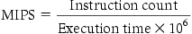
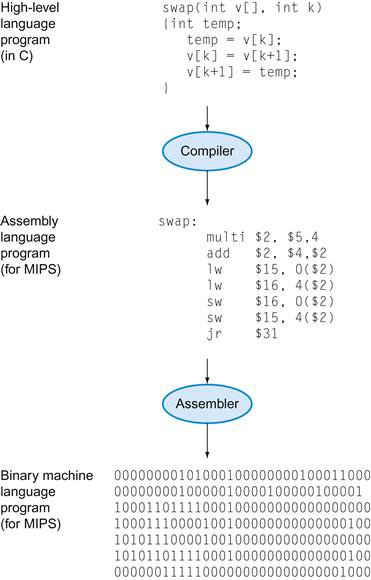
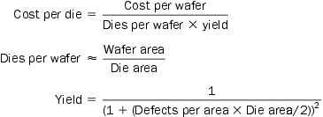

Terms
transistor
An on/off switch controlled by an electric signal.
pixel
The smallest individual picture element. Screens are composed of hundreds of thousands of millions of pixels, organized in a matrix.
1.5
silicon crystal ingot
A rod composed of a silicon crystal that is between 8 and 12 inches in diameter and about 12 to 24 inches long.
wafer
A slice from a silicon ingot no more than 0.1 inches thick, used to create chips.
defect
A microscopic flaw in a wafer or in patterning steps that can result in the failure of the die containing that defect.
die
The individual rectangular sections that are cut from a wafer, more informally known as chips.
yield
The percentage of good dies from the total number of dies on the wafer.
1.6
throughput
Also called bandwidth. Another measure of performance, it is the number of tasks completed per unit time.
CPU execution time
Also called CPU time. The actual time the CPU spends computing for a specific task.
user CPU time
The CPU time spent in a program itself.
system CPU time
The CPU time spent in the operating system performing tasks on behalf of the program.
clock cycle
Also called tick, clock tick, clock period, clock, or cycle. The time for one clock period, usually of the processor clock, which runs at a constant rate.
1.9
SPEC (System Performance Evaluation Cooperative)
Formulas
1.5

1.6
performance = 1 / execution time
clock rate = 1 / clock cycle time
CPU time = (Instruction count x CPI) / Clock rate
1.9
SPECratio = reference time / execution time
1.10

Exercises
※ The following solutions are my thoughts so that they may be wrong. If one of the solutions is wrong, please reply to that.
1.1 [2] <§1.1> Aside from the smart cell phones used by a billion people, list and describe four other types of computers.
- personal computer (PC)
A computer designed for use by an individual, usually incorporating a graphics display, a keyboard, and a mouse. - server
A computer used for running larger programs for multiple users, often simultaneously, and typically accessed only via a network. - supercomputer
A class of computers with the highest performance and cost; they are configured as servers and typically cost tens to hundreds of millions of dollars. - embedded computer
A computer inside another device used for running one predetermined application or collection of software.
1.2 [5] <§1.2> The eight great ideas in computer architecture are similar to ideas from other fields. Match the eight ideas from computer architecture, “Design for Moore’s Law”, “Use Abstraction to Simplify Design”, “Make the Common Case Fast”, “Performance via Parallelism”, “Performance via Pipelining”, “Performance via Prediction”, “Hierarchy of Memories”, and “Dependability via Redundancy” to the following ideas from other fields:
a. Assembly lines in automobile manufacturing
b. Suspension bridge cables
c. Aircraft and marine navigation systems that incorporate wind information
d. Express elevators in buildings
e. Library reserve desk
f. Increasing the gate area on a CMOS transistor to decrease its switching time
g. Adding electromagnetic aircraft catapults (which are electrically-powered as opposed to current steam-powered models), allowed by the increased power generation offered by the new reactor technology
h. Building self-driving cars whose control systems partially rely on existing sensor systems already installed into the base vehicle, such as lane departure systems and smart cruise control systems
- Performance via Pipelining
- Make the Common Case Fast
Suspension bridge cables consist of a great number of steel wires. - Performance via Prediction
- Performance via Parallelism
- Dependability via Redundancy
- Design for Moore’s Law
- Hierarchy of Memories
- Use Abstraction to Simplify Design
1.3 [2] <§1.3> Describe the steps that transform a program written in a high-level language such as C into a representation that is directly executed by a computer processor.

FIGURE 1.4
High-level language program이 compiler를 거치면 Assembly language program으로 변환된다. Assembly language program이 Assembler를 거치면 Binary machine language program으로 변환된다.
1.4 [2] <§1.4> Assume a color display using 8 bits for each of the primary colors (red, green, blue) per pixel and a frame size of 1280×1024.
a. What is the minimum size in bytes of the frame buffer to store a frame?
b. How long would it take, at a minimum, for the frame to be sent over a 100 Mbit/s network?
- Number of Bytes per Pixel = 8 bits x 3 colors / 8 = 3 bytes.
minimum size = 1280x1024x3 = 3932160 bytes. - 3932160x8 / 100000000 = 0.3145728 seconds
1.5 [4] <§1.6> Consider three different processors P1, P2, and P3 executing the same instruction set. P1 has a 3 GHz clock rate and a CPI of 1.5. P2 has a 2.5 GHz clock rate and a CPI of 1.0. P3 has a 4.0 GHz clock rate and has a CPI of 2.2.
a. Which processor has the highest performance expressed in instructions per second?
b. If the processors each execute a program in 10 seconds, find the number of cycles and the number of instructions.
c. We are trying to reduce the time by 30% but this leads to an increase of 20% in the CPI. What clock rate should we have to get this time reduction?
IC = Instruction Count, CC = Cycle Count
- P2 has highest performance.
$\text{IC}_{p1} = 2 * 10^{9}$
$\text{IC}_{p2} = 2.5 * 10^{9}$
$\text{IC}_{p3} = 1.8 * 10^{9}$ - $\text{IC}_{p1} = 2 * 10^{10}$
$\text{IC}_{p2} = 2.5 * 10^{10}$
$\text{IC}_{p3} = 1.8 * 10^{10}$
$\text{CC}_{p1} = 2 * 1.5 * 10^{10}$
$\text{CC}_{p2} = 2.5 * 1 * 10^{10}$
$\text{CC}_{p3} = 1.8 * 2.2 * 10^{10}$ - Execution time x 0.7 = (Instruction Count x CPI x 1.2) / clock rate
Execution time = (Instruction Count x CPI) / (clock rate x 12/7)
new clock rate = 12/7 x clock rate
1.6 [20] <§1.6> Consider two different implementations of the same instruction set architecture. The instructions can be divided into four classes according to their CPI (class A, B, C, and D). P1 with a clock rate of 2.5 GHz and CPIs of 1, 2, 3, and 3, and P2 with a clock rate of 3 GHz and CPIs of 2, 2, 2, and 2.
Given a program with a dynamic instruction count of 1.0E6 instructions divided into classes as follows: 10% class A, 20% class B, 50% class C, and 20% class D, which implementation is faster?
a. What is the global CPI for each implementation?
b. Find the clock cycles required in both cases.
P2 is faster than P1.
- $\begin{align*} T_{P1} &= \frac{0.1\times 10^{6}\times 1}{2.5} + \frac{0.2\times 10^{6}\times 2}{2.5} + \frac{0.5\times 10^{6}\times 3}{2.5} + \frac{0.2\times 10^{6}\times 3}{2.5} \\ &= \frac{10^{6}\times 2.6}{2.5} \\ \end{align*}$
P1 global CPI = 2.6
P2 global CPI = 2.0 - clock cycle (P1) = 106 x 2.6
clock cycle (P2) = 106 x 2.0
1.7 [15] <§1.6> Compilers can have a profound impact on the performance of an application. Assume that for a program, compiler A results in a dynamic instruction count of 1.0E9 and has an execution time of 1.1 s, while compiler B results in a dynamic instruction count of 1.2E9 and an execution time of 1.5 s.
a. Find the average CPI for each program given that the processor has a clock cycle time of 1 ns.
b. Assume the compiled programs run on two different processors. If the execution times on the two processors are the same, how much faster is the clock of the processor running compiler A’s code versus the clock of the processor running compiler B’s code?
c. A new compiler is developed that uses only 6.0E8 instructions and has an average CPI of 1.1. What is the speedup of using this new compiler versus using compiler A or B on the original processor?
- CPI A = 1.1
CPI B = 1.25
execution time = clock cycle x clock cycle time. - the clock of the processor running compiler B's code is much faster.
1.0 x 109 x 1.1 x clock cycle timeA = 1.2 x 109 x 1.25 x clock cycle timeB
clock cycle timeA / clock cycle timeB = 15 / 11 = 1.36…
분수에서는 1보다 크면 분자가 분모보다 크다는 걸 의미하므로 clock cycle timeA > clock cycle timeB 이다. - For the original processor with a clock cycle time of 1 ns:
clock cycle timeA / clock cycle timenew = 1.0E9 x 1.1 / 6.0E8 x 1.1 =10 / 6 = 1.67
clock cycle timeB / clock cycle timenew = 1.2E9 x 1.25 / 6.0E8 x 1.1 = 50 / 22 = 2.27
1.8 The Pentium 4 Prescott processor, released in 2004, had a clock rate of 3.6 GHz and voltage of 1.25 V. Assume that, on average, it consumed 10 W of static power and 90 W of dynamic power.
The Core i5 Ivy Bridge, released in 2012, has a clock rate of 3.4 GHz and voltage of 0.9 V. Assume that, on average, it consumed 30 W of static power and 40 W of dynamic power.
1.8.1 [5] <§1.7> For each processor find the average capacitive loads.
1.8.2 [5] <§1.7> Find the percentage of the total dissipated power comprised by static power and the ratio of static power to dynamic power for each technology. (※ dissipated == consumed )
1.8.3 [15] <§1.7> If the total dissipated power is to be reduced by 10%, how much should the voltage be reduced to maintain the same leakage current? Note: power is defined as the product of voltage and current.
- capacitive load of P4 = 5.625 x 10-9
capacitive load of i5 = 2.754 x 10-9
power = capacitive load * voltage^2 * frequency switchedfrequency switched = clock ratecapacitive load = power/(voltage^2 * clock rate) - P4
the total dissipated power = 10 + 90 = 100W
static power / the total dissipated power = (10 / 90) * 100 = 11%
the ratio of static power to dynamic power = 10 / 90 = 0.11
i5
the total dissipated power = 30 + 40 = 70W
static power / the total dissipated power = (30 / 70) * 100 = 43%
the ratio of static power to dynamic power = 30 / 40 = 0.75 - the voltage of both P4 and i5 should be reduced by 10%.
※ the total dissipated power = Voltage x leakage current(I)
P4
100 = 1.25 x I
I = 80A
the total dissipated power * 0.9 = 90W
90 = 1.25α x 80, α = 0.9
i5
70 = 0.9 x I
I = 78 (rounded up)
the total dissipated power * 0.9 = 63W
63 = 0.9α x 78, α = 0.9 (rounded up)
1.9 Assume for arithmetic, load/store, and branch instructions, a processor has CPIs of 1, 12, and 5, respectively. Also assume that on a single processor a program requires the execution of 2.56E9 arithmetic instructions, 1.28E9 load/store instructions, and 256 million branch instructions. Assume that each processor has a 2 GHz clock frequency.
Assume that, as the program is parallelized to run over multiple cores, the number of arithmetic and load/store instructions per processor is divided by 0.7 x p (where p is the number of processors) but the number of branch instructions per processor remains the same.
1.9.1 [5] <§1.7> Find the total execution time for this program on 1, 2, 4, and 8 processors, and show the relative speedup of the 2, 4, and 8 processor result relative to the single processor result.
1.9.2 [10] <§§1.6, 1.8> If the CPI of the arithmetic instructions was doubled, what would the impact be on the execution time of the program on 1, 2, 4, or 8 processors?
1.9.3 [10] <§§1.6, 1.8> To what should the CPI of load/store instructions be reduced in order for a single processor to match the performance of four processors using the original CPI values?
- the total execution time = instructions(arithmetic + load/store + branch) / clock frequency.
processornum of ins per pro
total exec time
relative speedupArithmetic
(CPI 1)load/store
(CPI 12)branch
(CPI 5)1 2.56E9 1.28E9 2.56E8 9.60s 1 2 1.83E9 0.91E9 2.56E8 7.02s 1.37 4 0.91E9 0.46E9 2.56E8 3.86s 2.49 8 0.46E9 0.23E9 2.56E8 2.25s 4.27 - 프로세서 수가 많아질수록 총 수행시간이 점점 줄어든다. 따라서, 프로세서가 많은 것이 더 효율적이라 말할 수 있다.
processornum of ins per pro
total exec timeArithmetic
(CPI 2)load/store
(CPI 12)branch
(CPI 5)1 2.56E9 1.28E9 2.56E8 10.88s 2 1.83E9 0.91E9 2.56E8 7.93s 4 0.91E9 0.46E9 2.56E8 4.31s 8 0.46E9 0.23E9 2.56E8 2.48s - the CPI of load/store instructions should be reduced by 25%.
3.86 = (2.56E9 + 1.28E9 x α + 2.56E8 x 5) / 2.0E9 , α = 3.03
3.03 / 12 = 0.25
1.10 Assume a 15 cm diameter wafer has a cost of 12, contains 84 dies, and has 0.020 defects/cm2. Assume a 20 cm diameter wafer has a cost of 15, contains 100 dies, and has 0.031 defects/cm2.
1.10.1 [10] <§1.5> Find the yield for both wafers.
1.10.2 [5] <§1.5> Find the cost per die for both wafers.
1.10.3 [5] <§1.5> If the number of dies per wafer is increased by 10% and the defects per area unit increases by 15%, find the die area and yield.
1.10.4 [5] <§1.5> Assume a fabrication process improves the yield from 0.92 to 0.95. Find the defects per area unit for each version of the technology given a die area of 200 mm².

- yield15cm = 0.96 , yield20cm = 0.9
- cost per die15cm = 0.15 , cost per die20cm = 0.17
- die area15cm = 1.92, yield15cm = 0.96
die area20cm = 2.86, yield20cm = 0.95
지름 15cm wafer는 yield 차이가 나지 않는다. 왜 그러지... - defects per area unit0.92 = 0.042 , defects per area unit0.95 = 0.025
풀이법 : yield 공식에 root를 씌운 후 이항 시켜 풀면 된다.
1.11 The results of the SPEC CPU2006 bzip2 benchmark running on an AMD Barcelona has an instruction count of 2.389E12, an execution time of 750 s, and a reference time of 9650 s.
1.11.1 [5] <§§1.6, 1.9> Find the CPI if the clock cycle time is 0.333 ns.
1.11.2 [5] <§1.9> Find the SPECratio.
1.11.3 [5] <§§1.6, 1.9> Find the increase in CPU time if the number of instructions of the benchmark is increased by 10% without affecting the CPI.
1.11.4 [5] <§§1.6, 1.9> Find the increase in CPU time if the number of instructions of the benchmark is increased by 10% and the CPI is increased by 5%.
1.11.5 [5] <§§1.6, 1.9> Find the change in the SPECratio for this change.
1.11.6 [10] <§1.6> Suppose that we are developing a new version of the AMD Barcelona processor with a 4 GHz clock rate. We have added some additional instructions to the instruction set in such a way that the number of instructions has been reduced by 15%. The execution time is reduced to 700 s and the new SPECratio is 13.7. Find the new CPI.
1.11.7 [10] <§1.6> This CPI value is larger than obtained in 1.11.1 as the clock rate was increased from 3 GHz to 4 GHz. Determine whether the increase in the CPI is similar to that of the clock rate. If they are dissimilar, why?
1.11.8 [5] <§1.6> By how much has the CPU time been reduced?
1.11.9 [10] <§1.6> For a second benchmark, libquantum, assume an execution time of 960 ns, CPI of 1.61, and clock rate of 3 GHz. If the execution time is reduced by an additional 10% without affecting to the CPI and with a clock rate of 4 GHz, determine the number of instructions.
1.11.10 [10] <§1.6> Determine the clock rate required to give a further 10% reduction in CPU time while maintaining the number of instructions and with the CPI unchanged.
1.11.11 [10] <§1.6> Determine the clock rate if the CPI is reduced by 15% and the CPU time by 20% while the number of instructions is unchanged.
1.11.2 [5] <§1.9> Find the SPECratio.
1.11.3 [5] <§§1.6, 1.9> Find the increase in CPU time if the number of instructions of the benchmark is increased by 10% without affecting the CPI.
1.11.4 [5] <§§1.6, 1.9> Find the increase in CPU time if the number of instructions of the benchmark is increased by 10% and the CPI is increased by 5%.
1.11.5 [5] <§§1.6, 1.9> Find the change in the SPECratio for this change.
1.11.6 [10] <§1.6> Suppose that we are developing a new version of the AMD Barcelona processor with a 4 GHz clock rate. We have added some additional instructions to the instruction set in such a way that the number of instructions has been reduced by 15%. The execution time is reduced to 700 s and the new SPECratio is 13.7. Find the new CPI.
1.11.7 [10] <§1.6> This CPI value is larger than obtained in 1.11.1 as the clock rate was increased from 3 GHz to 4 GHz. Determine whether the increase in the CPI is similar to that of the clock rate. If they are dissimilar, why?
1.11.8 [5] <§1.6> By how much has the CPU time been reduced?
1.11.9 [10] <§1.6> For a second benchmark, libquantum, assume an execution time of 960 ns, CPI of 1.61, and clock rate of 3 GHz. If the execution time is reduced by an additional 10% without affecting to the CPI and with a clock rate of 4 GHz, determine the number of instructions.
1.11.10 [10] <§1.6> Determine the clock rate required to give a further 10% reduction in CPU time while maintaining the number of instructions and with the CPI unchanged.
1.11.11 [10] <§1.6> Determine the clock rate if the CPI is reduced by 15% and the CPU time by 20% while the number of instructions is unchanged.
- CPI = 0.94
CPI = execution time / (instruction count * clock cycle time) - SPECratio = 12.9
SPECratio = reference time / execution time - increase in CPU time = 1 - 823/750 = 0.1 (10%)
instruction count * 1.1 = 2.628, CPU time = 823s - increase in CPU time = 901/750 - 1 = 0.2 (20%)
CPI * 1.1 = 1.03, CPU time = 901s - SPECratio for this change = 10.7
- CPInew = 1.38
instruction countnew = 2.031E12, clock rate = 4.0 x 109 - // This answer may be incorrect.
they are dissimilar because instruction count has been reduced.
clock rate ratio = 4 GHz/3 GHz = 1.33
CPI ratio = 1.38 / 0.94 = 1.47 - the CPU time has been reduced by 7%.
※ 비율을 따질 때 조심할 것은 어떤 대상이 기준인가 하는 것이다. - // in 1.11.9, execution time is 960ns. but I think it is "s" not "ns".
Therefore, I will use "s" instead of "ns".
number of instructions = 2147 x 109 - clock ratenew1 = 2147 x 109 x 1.61 / 864 = 4.0 x 109 = 4Ghz
CPU time * 0.9 = 864 - clock ratenew2 = 3.83 x 109 = 3.83Ghz
CPI * 0.85 = 1.37, execution time * 0.8 = 768s
1.12 Section 1.10 cites as a pitfall the utilization of a subset of the performance equation as a performance metric. To illustrate this, consider the following two processors. P1 has a clock rate of 4 GHz, average CPI of 0.9, and requires the execution of 5.0E9 instructions. P2 has a clock rate of 3 GHz, an average CPI of 0.75, and requires the execution of 1.0E9 instructions.
1.12.1 [5] <§§1.6, 1.10> One usual fallacy is to consider the computer with the largest clock rate as having the largest performance. Check if this is true for P1 and P2.
1.12.2 [10] <§§1.6, 1.10> Another fallacy is to consider that the processor executing the largest number of instructions will need a larger CPU time. Considering that processor P1 is executing a sequence of 1.0E9 instructions and that the CPI of processors P1 and P2 do not change, determine the number of instructions that P2 can execute in the same time that P1 needs to execute 1.0E9 instructions.
1.12.3 [10] <§§1.6, 1.10> A common fallacy is to use MIPS (millions of instructions per second) to compare the performance of two different processors, and consider that the processor with the largest MIPS has the largest performance. Check if this is true for P1 and P2.
1.12.4 [10] <§1.10> Another common performance figure is MFLOPS (millions of floating-point operations per second), defined as
but this figure has the same problems as MIPS. Assume that 40% of the instructions executed on both P1 and P2 are floating-point instructions. Find the MFLOPS figures for the programs.
1.12.1 [5] <§§1.6, 1.10> One usual fallacy is to consider the computer with the largest clock rate as having the largest performance. Check if this is true for P1 and P2.
1.12.2 [10] <§§1.6, 1.10> Another fallacy is to consider that the processor executing the largest number of instructions will need a larger CPU time. Considering that processor P1 is executing a sequence of 1.0E9 instructions and that the CPI of processors P1 and P2 do not change, determine the number of instructions that P2 can execute in the same time that P1 needs to execute 1.0E9 instructions.
1.12.3 [10] <§§1.6, 1.10> A common fallacy is to use MIPS (millions of instructions per second) to compare the performance of two different processors, and consider that the processor with the largest MIPS has the largest performance. Check if this is true for P1 and P2.
1.12.4 [10] <§1.10> Another common performance figure is MFLOPS (millions of floating-point operations per second), defined as
but this figure has the same problems as MIPS. Assume that 40% of the instructions executed on both P1 and P2 are floating-point instructions. Find the MFLOPS figures for the programs.
- this is not true.
clock rateP1 = 4Ghz, execution timeP1 = 1.125 , performanceP1 = 0.88
clock rateP2 = 3Ghz, execution timeP2 = 0.25 , performanceP2 = 4 - number of instructions = 9.0 x 108
- this is not ture. MIPSP1 > MIPSP2 but performace is not.
MIPSP1 = 4.44 x 103 , MIPSP2 = 4.0 x 103 - MFLOPSP1 = 1.8E9 / (0.45 x 1E6) = 4 x 103, MFLOPSP2 = 0.3E9 / (0.1 x 1E6) = 3 x 103
No. FP operationsP1 = 5.0E9 x 0.4 x 0.9 = 1.8 x 109, No. FP operationsP2 = 1.0E9 x 0.4 x 0.75 = 0.3 x 109
execution timeP1 = 1.8 x 109 / 4 x 109 = 0.45 , execution timeP2 = 0.3 x 109 / 3 x 109 = 0.1
1.13 Another pitfall cited in Section 1.10 is expecting to improve the overall performance of a computer by improving only one aspect of the computer. Consider a computer running a program that requires 250 s, with 70 s spent executing FP instructions, 85 s executed L/S instructions, and 40 s spent executing branch instructions.
1.13.1 [5] <§1.10> By how much is the total time reduced if the time for FP operations is reduced by 20%?
1.13.2 [5] <§1.10> By how much is the time for INT operations reduced if the total time is reduced by 20%?
1.13.3 [5] <§1.10> Can the total time can be reduced by 20% by reducing only the time for branch instructions?
- total time(reduced) = 56 + 85 + 40 + 55 = 236
FP instructions reduced = 70 * 0.8 = 56 - timeINT (reduced) = 11%
total time reduced = 250 * 0.8 = 200 , 200 = 56 + 85 + 40 + 55α - The total time can't be reduced by 20% since "200 = 40α + 210" is incorrect.
1.14 Assume a program requires the execution of 50×106 FP instructions, 110×106 INT instructions, 80×106 L/S instructions, and 16×106 branch instructions. The CPI for each type of instruction is 1, 1, 4, and 2, respectively. Assume that the processor has a 2 GHz clock rate.
1.14.1 [10] <§1.10> By how much must we improve the CPI of FP instructions if we want the program to run two times faster?
1.14.2 [10] <§1.10> By how much must we improve the CPI of L/S instructions if we want the program to run two times faster?
1.14.3 [5] <§1.10> By how much is the execution time of the program improved if the CPI of INT and FP instructions is reduced by 40% and the CPI of L/S and Branch is reduced by 30%?
// I think the number of each instructions is 106 not 106.
- We cannot improve the CPI of FP instructions since it would be negative.
clock cycle = (50 x 106 x 1+ 110 x 106 x 1 + 80 x 106 x 4 + 16 x 106 x 2) = 512 x 106
execution time = (512 x 106) / (2 x 109) = 256 x 10-3 = 0.256s
프로그램을 두배 빠르게 하기 위해 clock cycle을 2 로 나누면,
clock cycle / 2 = 256 x 106 = 50 x 106 x CPIFP + 110 x 106 x 1 + 80 x 106 x 4 + 16 x 106 x 2
CPIFP = (256 x 106 - 462 x 106) / (50 x 106)
음수가 나오므로 CPIFP를 개선할 수 없다.
execution timeimproved = execution time * 1/2 = 128 x 10-3 = 25 x 10-3 + 231 x 10-3 - CPIL/S (improved) = 0.2
256 x 106 = 50 x 106 x 1 + 110 x 106 x 1 + 80 x 106 x 4 x CPIL/S + 16 x 106 x 2
CPIL/S = (256 - 192) x 106 / (80 x 106 x 4) = 0.2 - execution time(improved) = 0.1712s ( It is 0.0848s faster than the original execution time(0.256s))
1.15 [5] <§1.8> When a program is adapted to run on multiple processors in a multiprocessor system, the execution time on each processor is comprised of computing time and the overhead time required for locked critical sections and/or to send data from one processor to another.
Assume a program requires t=100 s of execution time on one processor. When run p processors, each processor requires t/p s, as well as an additional 4 s of overhead, irrespective of the number of processors. Compute the per-processor execution time for 2, 4, 8, 16, 32, 64, and 128 processors. For each case, list the corresponding speedup relative to a single processor and the ratio between actual speedup versus ideal speedup (speedup if there was no overhead).
processor | execution time | total time | relative speedup | actual speedup vs ideal speedup |
|---|---|---|---|---|
| 1 | 100s | 100s | ||
| 2 | 50s | 54s | 1.85 | 0.93 |
| 4 | 25 | 29 | 3.45 | 0.86 |
| 8 | 12.5 | 16.5 | 6.06 | 0.76 |
| 16 | 6.25 | 10.25 | 9.76 | 0.61 |
| 32 | 3.125 | 7.125 | 14.04 | 0.44 |
| 64 | 1.5625 | 5.5625 | 17.98 | 0.28 |
| 128 | 0.78125 | 4.78125 | 20.92 | 0.16 |
Reference